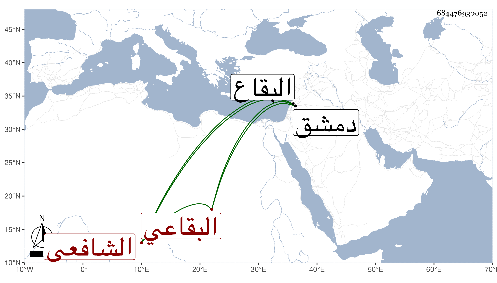

0902Sakhawi.DawLamic.ITO20230111-ara1.EIS1600.684476930052
Biography ID: 684476930052
391
محمد بن محمد بن علي بن محمد بن سليمان الشمس ين السليمي بالتصغير البقاعي الشافعي ابن خال إبراهيم البقاعي . ولد بعد سنة خمس وتسعين وسبعمائة تقريبا بخربة روحاء من البقاع ومات بقرية عين ثرمان من ضواحي دمشق سنة سبع وستين قبل رمضانها .
